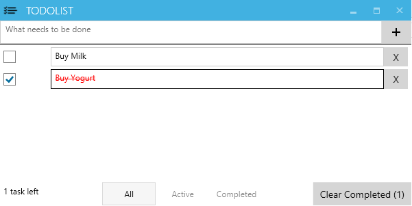

A C# todolist created using MVVM design pattern and bdd priviples

Libraries Used
*Because the project uses CodedUITest, Visual Studio premium and above is required for running the integration tests
Building the project
- Enable Nuget Restore
- Launch the main app "ToDoWpfView"
Running the tests:
- Under "Test" -> "Test Settings", choose the file "TestSettings.runsetings"
- Install the visual studio extension "NUnit Test Adapter"
- Under "test" -> "Run", choose "All Tests"
Sample Spec and Specflow File
Integration Test Project: TodoUiTest